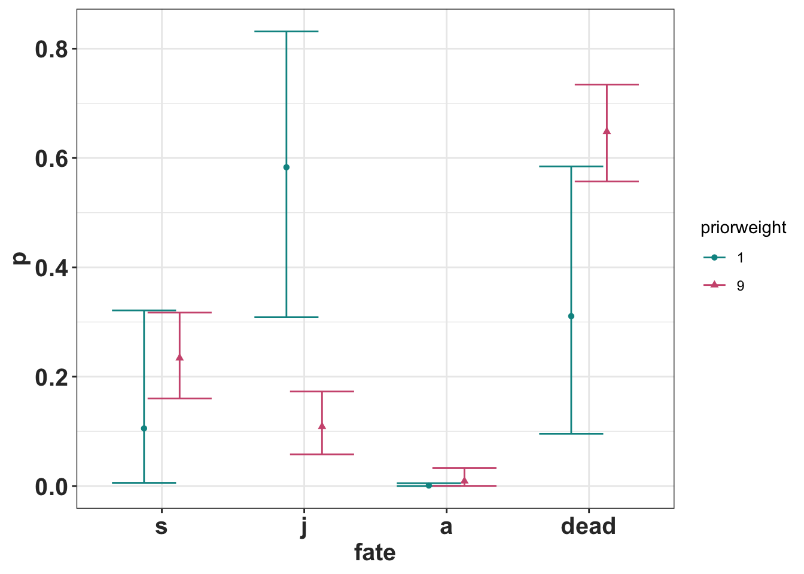
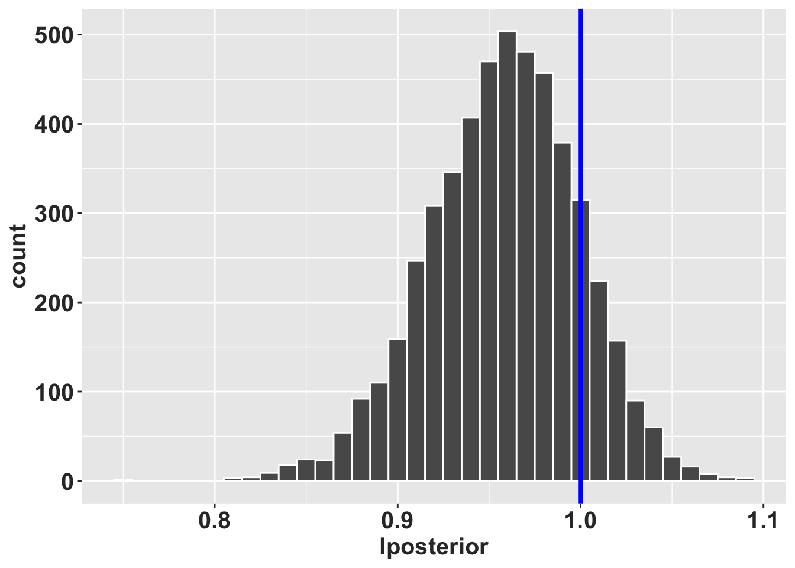

Acercamiento Bayesiano para calcular transiciones y fertilidades
Por: Raymond L. Tremblay
Código
if (!require("pacman")) install.packages("pacman")pacman::p_load(janitor, tidyverse, devtools)library(tidyverse)library(janitor)library(popbio) # para la función projection.matrix()library(devtools) # para instalar el paquete desde githublibrary(raretrans) # vea abajo para instalar esta librerialibrary(DiagrammeR)library(Rage)library(gt)
Código
rlt_theme <-theme(axis.title.y =element_text(colour ="grey20", size =10, face ="bold"),axis.text.x =element_text(colour ="grey20", size =10, face ="bold"),axis.text.y =element_text(colour ="grey20", size =15, face ="bold"),axis.title.x =element_text(colour ="grey20", size =15, face ="bold")) +theme(# Remover los borderpanel.border =element_blank(),# Remover las lineaspanel.grid.major =element_blank(),panel.grid.minor =element_blank(),# Remove el fondo del panelpanel.background =element_blank(),# añadir lineas más gruesasaxis.line.x =element_line(colour ="black", linewidth =1),axis.line.y =element_line(colour ="black", linewidth =1) )diverging=c("#009392","#CF597E","#E9E29C", "#39B185","#EEB479" , "#9CCB86" )# --- 2. Combine them into a list object ---# This list can be added to the plot with a single '+'rlt_style_fill <-function() {list( rlt_theme,scale_fill_manual(values = diverging) )}rlt_style_colour <-function() {list( rlt_theme,scale_colour_manual(values = diverging) )}
Introducción MPP Bayesiano
Introducción al MPP Bayesiano Este capítulo presenta una alternativa bayesiana para estimar los parámetros de las matrices de transición y fecundidad en modelos poblacionales, especialmente útil en el estudio de especies raras. Estas especies suelen tener tamaños de muestra reducidos o transiciones vitales poco frecuentes, lo que dificulta obtener estimaciones confiables. El enfoque bayesiano propuesto permite incorporar conocimiento previo sobre el ciclo de vida de la especie para generar estimaciones más realistas.
Ejemplo de especie con tres etapas
Consideremos una especie hipotética con tres etapas en su ciclo de vida: semillas, plántulas y adultos. En este caso, sólo los adultos producen semillas. El primer paso del análisis consiste en identificar qué etapas tienen mayor influencia en la dinámica poblacional y cómo optimizar la recolección de datos en campo.
La primera figura muestra el ciclo de vida considerado. Tras definirlo, se recolectaron datos de campo y se estimaron las tasas de transición y fecundidad. Los resultados revelaron lo siguiente:
No se observaron semillas. Esto podría indicar que todas germinaron y pasaron a la etapa de plántula.
¿Es realista asumir que el 100% de las semillas germinaron?
¿Por qué no se encontraron semillas en el muestreo?
No se observaron plántulas. Esto podría interpretarse como que todas murieron o que ninguna semilla germinó.
¿Es realista asumir que todas las plántulas mueren durante el ciclo de vida de una especie?
Estas interpretaciones extremas —que ningún individuo muere o que todos mueren— no son biológicamente realistas. Sin embargo, pueden surgir como resultado de un tamaño de muestra reducido. Por ejemplo, si sólo se observaron 4 plantas adultas (debido a que la especie es rara) y todas sobrevivieron, se estimaría una tasa de supervivencia del 100%, lo que implicaría que los individuos son “inmortales”. Este resultado no refleja la realidad biológica, sino una limitación del muestreo: por simple azar, no se observó ninguna muerte. Por lo tanto, es fundamental reconocer cuándo los parámetros estimados no representan adecuadamente la historia de vida típica de la especie.
El papel del paquete raretrans
El paquete raretrans fue desarrollado para abordar este tipo de situaciones. Utiliza un enfoque bayesiano que permite incorporar conocimiento previo sobre el ciclo de vida de la especie, ayudando a estimar parámetros más realistas incluso cuando los datos son escasos o incompletos.
**Ejemplos de interpretaciones no realistas**
Algunas interpretaciones biológicamente poco plausibles que pueden surgir del análisis de datos limitados incluyen:
Todas las semillas germinan y se convierten en plántulas.
Ninguna plántula sobrevive ni alcanza la etapa adulta.
Todos los adultos sobreviven sin mortalidad.
Ningún adulto produce semillas.
Nota: Aunque estos resultados pueden surgir directamente de los datos recolectados, muchas veces son consecuencia de tamaños de muestra pequeños o de eventos raros que no se observaron durante el periodo de muestreo. Por ello, es esencial considerar tanto la biología de la especie como las limitaciones del muestreo al interpretar los datos.
Evaluación Crítica del Ciclo de Vida y la Matriz Poblacional
El ciclo de vida propuesto para esta especie hipotética presenta limitaciones importantes que lo hacen poco realista. En particular:
No se observaron semillas en el muestreo, lo que sugiere que todas germinaron y pasaron a la etapa de plántula. Sin embargo, asumir una germinación del 100% es altamente improbable en condiciones naturales.
Ninguna plántula sobrevivió, lo que indica una falla completa en la transición hacia la etapa adulta.
Como resultado, la tasa de crecimiento poblacional asintótica observada es \(\lambda = 0.9\) lo que implica una población en declive.
Además, la matriz poblacional estimada presenta dos propiedades estructurales problemáticas:
No es ergódica: No es posible transitar desde cualquier estado a cualquier otro estado dentro del ciclo de vida. Esto limita la conectividad entre etapas y reduce la capacidad de la matriz para representar adecuadamente la dinámica poblacional.
Es reducible: Una o más filas y columnas pueden eliminarse sin alterar las propiedades fundamentales de la matriz (como sus eigenvalores y eigenvectores). Esto indica que ciertas etapas del ciclo de vida no contribuyen significativamente a la dinámica poblacional, lo cual puede ser un artefacto del muestreo o de una estructura biológica mal representada.
Código
plot_life_cycle(matA, stages = stages)
Interpretaciones biológicamente irreales de los datos existentes.
Al estudiar especies longevas como Sequoia sempervirens, es común enfrentar interpretaciones erróneas derivadas de datos limitados o mal contextualizados. Esta especie puede alcanzar tamaños extraordinarios (diámetros a la altura del pecho, dbh, mayores a 3 metros) y tener una longevidad estimada entre 1,200 y 2,200 años.
Supongamos que se realiza un muestreo de más de 1,000 individuos grandes. Es posible que, en un intervalo de uno o incluso diez años, no se observe la muerte de ningún individuo. A partir de estos datos, se podría concluir erróneamente que la supervivencia anual es del 100%. Sin embargo, esta interpretación es biológicamente poco realista por varias razones:
Tamaño de muestra insuficiente: Si el muestreo se ampliara a 10,000 o 100,000 individuos, probablemente se detectarían muertes, aunque fueran pocas. Esto sugiere que la mortalidad es baja, pero no nula.
Relación entre tamaño y mortalidad: En plantas, la probabilidad de morir suele disminuir con el tamaño del individuo. Los árboles más grandes tienen mayor resistencia a factores ambientales y biológicos, lo que reduce su tasa de mortalidad.
Dependencia temporal de la mortalidad: La muerte de individuos puede estar influenciada por eventos bióticos (plagas, enfermedades) o abióticos (sequías, incendios, tormentas) que varían entre años. En años extremos, la mortalidad puede aumentar significativamente.
Por lo tanto, aunque los datos observados sugieren una supervivencia perfecta, la probabilidad real de mortalidad es baja pero no cero. Este tipo de sesgo en la interpretación puede ser corregido mediante enfoques estadísticos más robustos, como el uso de modelos bayesianos que incorporan incertidumbre y conocimiento previo sobre la biología de la especie.
El paquete “raretrans”
El siguiente sección usaremos el paquete “raretrans” que facilita los estimados de las entradas en la matrices de transicione y fecundidades. El manuscrito Tyre, Tremblay & Perez (2024) contiene los datos originales y el uso del paquete. Para tener acceso a los documentos siguen el siguiente enlace https://doi.org/10.1016/j.ecolmodel.2021.109526.
Population projections from holey matrices: Using prior information to estimate rare transition events
Resumen
Las matrices de proyección poblacional (MPM) son una herramienta común para predecir el comportamiento de la población a corto y largo plazo. Sin embargo, cuando se utilizan para especies raras, amenazadas y en peligro de extinción los datos disponibles suelen tener tamaños de muestra reducido. En consecuencia, algunos eventos demográficos podrían perderse en la modelización dando como resultado matrices con eventos faltantes que reflejen trayectorias de ciclo de vida incompletas o biológicamente poco realistas. Estas matrices con eventos faltantes (ceros; e.g., sin observación de semillas que se transforman en plántulas) a menudo se sustituyen utilizando información de la literatura aunque información referente a otras poblaciones, otros períodos de tiempo, otras especies usualmente se omite.
Una forma de abordar este problema es a través de métodos bayesianos para el ajuste de los parámetros matriciales. Este marco estadístico nos permite usar información previa para completar los valores faltantes usando, por ejemplo, una distribución de Dirichlet para incluir información sobre las transiciones de estado y una distribución Gamma como previa para la fecundidad. Este método permite integrar información conocida (a priori) e incluir explícitamente el peso de la información previa en las distribuciones posteriores. Además, al establecer explícitamente las distribuciones previas, los resultados son reproducibles y se pueden volver a evaluar con diferentes distribuciones a priori en el futuro. A continuación mostramos cómo el uso de estos métodos en datos reales influye en la dispersión de los resultados posteriores y origina matrices irreducibles y ergódicas, permitiendo hacer inferencias biológicamente más realistas sobre las probabilidades de transición y fertilidad.
Instalación del paquete raretrans
Para instalar el paquete raretrans, es necesario habilitar el acceso al código eliminando el símbolo # que precede las líneas del script de instalación. Esto permitirá ejecutar correctamente las funciones del paquete.
Si tienes dificultades para instalar el paquete directamente desde R, puedes acceder al repositorio oficial en GitHub y descargar las funciones manualmente desde el siguiente enlace.
Ver el siguiente enlace para más información, la información que se presenta a continuación es una traducción y ampliación de la información del siguiente enlace. A continuación se muestra el uso del paquete raretrans para estimar los parámetros en una población y en un periodo de transición determinados.
A continuación se ejemplifica el uso del paquete raretrans para estimar los parámetros en una población y en un periodo de transición determinados.
Código
# Mi tema de formato de las gráficas de ggplot2 personalrlt_theme <-theme(axis.title.y =element_text(colour="grey20",size=15,face="bold"),axis.text.x =element_text(colour="grey20",size=15, face="bold"),axis.text.y =element_text(colour="grey20",size=15,face="bold"), axis.title.x =element_text(colour="grey20",size=15,face="bold"))
Obtención de la matriz de proyección
raretrans supone que la matriz de proyección es una lista con dos componentes:
Matriz de transición: Probabilidades de pasar de una etapa a otra (o permanecer en la misma).
Matriz de fertilidad Número de nuevos individuos producidos por cada etapa reproductiva.
Este es el formato de salida de popbio::projection.matrix. Si tenemos transiciones individuales en nuestra base de datos (con clase data.frame()), podemos usar raretrans::get_state_vector para obtener el número inicial de individuos por etapa.
Podemos utilizar la función popbio::projection.matrix para obtener los datos necesarios. Hacemos una demostración con los datos de transición y fertilidad de Lepanthes eltoroensisPOPNUM 250 en el periodo 5. Lepanthes eltoroensis es una orquídea epífita, endémica de Puerto Rico y con una distribución limitada a una pequeña región de la isla.
Lepanthes eltoroensis. Foto: Edwin Guevara
Lepanthes eltoroensis. Foto: Edwin Guevara
Descargar los datos de la una población de L. elto del paquete raretrans
Código
data("L_elto") # carga el conjunto de datos `L_elto` en la memoria de la computadora (los datos están incluido en el paquete `raretrans`)head(L_elto)
# A tibble: 6 × 13
POPNUM year seedlings adults fertility IND_NUM stage next_stage first_year
<dbl> <dbl> <dbl> <dbl> <dbl> <dbl> <chr> <chr> <dbl>
1 209 1 1 6 0 67 j j 1
2 209 1 1 6 0 68 a a 1
3 209 1 1 6 0 69 a a 1
4 209 1 1 6 0 70 a a 1
5 209 1 1 6 0 71 j a 1
6 209 1 1 6 0 72 a a 1
# ℹ 4 more variables: last_year <dbl>, recruited <lgl>, died <dbl>,
# lifespan <int>
Organización de los datos en el “data.frame”
Supongamos que tienes una base de datos llamada L_elto con las siguientes columnas:
pop: identificador de la población
period: periodo de tiempo
stage: etapa actual del individuo
next_stage: etapa siguiente
fertility: indicador de fertilidad
Seleccionamos la población POPNUM 250 y el periodo 5:
El primer paso es seleccionar los datos de la población y el periodo de tiempo que queremos analizar. Posteriormente, cambiamos el nombre del estado más pequeño a “seedling”. Este paso no es estrictamente necesario pero nos ayuda a entender más fácilmente la nomenclatura.
La base de datos L_elto está compuesta por datos individuales del estado actual (stage, periodo t), del estado siguiente (next_stage, periodo t+1) y de la fertilidad. Tenga en cuenta que aquí “p” significa “plántula” por la traducción al español. En la siguiente caja de código las primeras líneas seleccionan la población de interés y el periodo de tiempo sobre el que queremos trabajar y cambian el nombre de la etapa del ciclo vital de “p” a “s”.
Código
onepop <- L_elto %>%filter(POPNUM ==250, year ==5) %>%# Filtrar la población # 250, el periodo (año=year) 5mutate(stage =case_when(stage =="p"~"s", TRUE~ stage),next_stage =case_when(next_stage =="p"~"s", TRUE~ next_stage) ) # redefine "p" por plantula a "s" para seedling
En el siguiente código usamos la función popbio::projection.matrix() para crear la matriz de proyección poblacional. Tenemos ahora nuestra matriz de transición y fecundidad basado en los datos de la población #250 del periodo 5. La función projection.matrix() requiere que se especifiquen los nombres de las etapas y los estados siguientes, así como el nombre de la columna de fertilidad. En este caso, las etapas son “s” (plántula), “j” (juvenil) y “a” (adulto), y el estado siguiente es next_stage. La columna de fertilidad se llama fertility. El argumento sort especifica el orden en que queremos que aparezcan las etapas en la matriz.
Solamente los adultos pueden producir plántulas, por lo que la matriz de fertilidad tiene un valor de fertilidad solamente en la posición (1,3), (plántula, adulto). La función projection.matrix() devuelve una lista con dos matrices: una de transición y otra de fertilidad. La matriz de transición es una matriz cuadrada que muestra las probabilidades de transición entre las etapas, mientras que la matriz de fertilidad es una matriz que muestra la fecundidad por etapa.
A partir de este punto los análisis se llevan a cabo considerando s (plántula), j (juvenil) y a (adulto), y las dos matrices: T (transición de estadios) y F (fertilidad). La tasa de crecimiento asintótica de la población observada es \(\lambda\). Las transiciones raras que faltan en nuestra primera matriz de transición ‘TF$T’, pero que sabemos que ocurren, son la transición de plántula (s) a adulto (a) y la transición de j a s.
Código
# popbio::projection.matrix no funciona con el formato *tibbles*, por consecuencia se convierte en data.framehead(onepop) # Ahora tenemos solamente datos de la población #250 del periodo 5
# A tibble: 6 × 13
POPNUM year seedlings adults fertility IND_NUM stage next_stage first_year
<dbl> <dbl> <dbl> <dbl> <dbl> <dbl> <chr> <chr> <dbl>
1 250 5 8 34 0 167 j a 1
2 250 5 8 34 0 168 j a 1
3 250 5 8 34 0 169 j a 1
4 250 5 8 34 0.118 170 a a 1
5 250 5 8 34 0 172 j j 1
6 250 5 8 34 0 173 j a 1
# ℹ 4 more variables: last_year <dbl>, recruited <lgl>, died <dbl>,
# lifespan <int>
Código
# Crear TF = TRUE, añadir para formatear correctamente.TF <- popbio::projection.matrix(as.data.frame(onepop),stage = stage,fate = next_stage,fertility ="fertility",sort =c("s", "j", "a"),TF =TRUE)TF # Este es la estructura de etapas de vida para esa población. Nota que tenemos dos matrices, una de transiciones **T** y otra de fertilidad **F**.
$T
s j a
s 0.09090909 0.00000000 0.00000000
j 0.63636364 0.57446809 0.00000000
a 0.00000000 0.29787234 0.85294118
$F
s j a
s 0.0000000 0.0000000 0.1176471
j 0.0000000 0.0000000 0.0000000
a 0.0000000 0.0000000 0.0000000
Obtener el número inicial de individuos por etapa
Dado que nuestros conteos (número de individuos), \(N\) y el tamaño de muestra equivalentea priori se expresan como múltiplos del número de individuos observados, necesitamos obtener el número de individuos en cada etapa (\(N\)) en el primer periodo de tiempo. Para esto utilizamos la función raretrans::get_state_vector(). Se observa que la cantidad de individuos iniciales por etapa es el número de individuos en el primer muestreo es muy limitada, con 11 plántulas, 47 juveniles y 34 adultos, para esta población en este periodo de muestreo.
Código
N <-get_state_vector(onepop, stage = stage, sort =c("s", "j", "a"))N # Un vector # de individuos iniciales para cada etapa, nota que la cantidad por etapa, "stage", son los individuos en el primer muestreo
[1] 11 47 34
Método alterno para calcular transiciones, fertilidades y el número de individuos por etapas.
La lista de matrices y el vector de conteos de individuos no tienen por qué proceder de un “data frame” como hemos hecho anteriormente. Mientras tengan el formato esperado, pueden crearse a mano. Usemos la población 231 en el periodo 2 como ejemplo para dividir la matriz poblacional en la submatrices de transición T y de fertilidad F. En el siguiente código, m denota mortalidad, es decir, plantas que están muertas. Note que aquí las transiciones están estimadas con un tamaño de muestra todavía más pequeño, solamente 2 plántulas, 6 juveniles y 16 adultos. Ninguna de las 2 plántulas pasaron a la etapa de juveniles. En consecuencia esta transición es de cero. Además, una de estas plántulas murió, por lo que la supervivencia es del 50%. Sin embargo, si hubieran muerto las dos plántulas la mortalidad sería del 100% y si hubieran sobrevivido las dos plántulas sería del 100% ¡No hay valores intermedios!
La matriz de transición y la matriz de fertilidad y el vector de tamaño poblacional para la población 231, periodo 2 son:
Código
TF2
$Tmat
stage
fate p j a
p 0.5000000 0.0000000 0.0000000
j 0.0000000 0.8333333 0.0000000
a 0.0000000 0.1666667 0.8750000
$Fmat
[,1] [,2] [,3]
[1,] 0 0 0.125
[2,] 0 0 0.000
[3,] 0 0 0.000
Código
N2
p j a
2 6 16
¿Cómo se ve el ciclo de vida de la población en ese periodo?
A la matriz mostrada le falta la transición de plántula a juvenil. Ademas dado que ninguno de los 6 juveniles murió hay una sobrestimación de su supervivencia. La tasa de crecimiento asintótica de la población observada es \(\lambda\). La matriz no es ergódica (no se puede llegar a cualquier otro estado desde uno o más estados), y es reducible, lo que significa que una o más columnas y filas se pueden descartar y tienen las mismas propiedades en términos de sus eigenvalores y eigenvectores.
Lo que vimos anteriormente fueron algunos de los problemas reales que encontramos cuando usamos datos de campo y hay tamaños de muestra pequeños o transiciones raras. A continuación veremos cómo resolverlos.
Para evitar que el modelo genere transiciones imposibles entre etapas del ciclo de vida, se pueden incorporar previas informativas. Estas previas se basan en el conocimiento experto sobre la especie, en este caso proporcionado por un especialista en orquídeas epífitas del género Lepanthes (RLT). La información debe tener el mismo formato que la matriz de transición, es decir:
Una matriz con una fila más que columnas.
La última fila representa los individuos que mueren en cada etapa.
Es importante que estos valores se definan antes de recolectar los datos de campo, para evitar que el análisis se vea influenciado o sesgado por los datos observados.
Note que la matriz tiene la 1ª fila, 3ª columna es 0,0, porque esta transición es imposible. Las previas se construyen de manera que las columnas sumen 1, lo que crea mayor flexibilidad para la ponderación de los valores a priori. Por defecto, la suma es 1, interpretado como un tamaño de muestra a priori de 1.
A hora usando la función de fill_transitions donde se agregan los valores del campo TF, el tamaño de muestra en el tiempo inicial N, la matriz de valores con priors informativos, y se calcula la matriz de transición a posteriori. Compare TF con esta matriz para ver los cambios.
Cuando usamos previas informativas en el modelo, podemos ajustar su peso modificando el tamaño de muestra a priori para cada etapa del ciclo de vida.
¿Por qué ajustar el peso?
Si tenemos alta confianza en los valores a priori (por ejemplo, por experiencia o estudios previos), podemos asignarles un peso mayor.
Si tenemos poca confianza, es mejor asignarles un peso pequeño, permitiendo que los datos de campo tengan mayor influencia en los resultados.
¿Cómo se interpreta el peso?
El peso se especifica como el tamaño de muestra a priori. Por defecto, cada columna de la matriz de previas suma 1, lo que equivale a un tamaño de muestra a priori de 1. Puedes modificar esta suma para reflejar mayor o menor certeza en los valores propuestos.
Código
fill_transitions(TF, N, P = RLT_Tprior, priorweight =0.5)
En este caso, el priorweight se pondera con la mitad del número de transiciones observadas. Por ejemplo: Si se observaron solo 2 transiciones, entonces priorweight = 1, lo que equivale a un tamaño de muestra a priori de 1. Si se observaran más transiciones, por ejemplo 20, entonces priorweight = 10, lo que permite que los datos observados tengan mayor influencia en el resultado final.
Recomendación Siempre se debe asignar a las previas un peso menor (preferiblemente mucho menor) que el tamaño de muestra observado. Esto garantiza que los datos reales del campo tengan mayor peso en el análisis y evita que el conocimiento previo domine injustamente los resultados.
Resultado
La nueva matriz de transición:
Es ergódica (todas las etapas están conectadas directa o indirectamente).
Es reducible, lo que significa que algunas etapas pueden no ser alcanzables desde otras, dependiendo del ciclo de vida.
Presenta tasas de mortandad y transición más realistas, gracias a la incorporación del conocimiento experto.
Intervalos de credibilidad para las transiciones
Una vez ajustada la matriz de transición con los datos observados y las previas informativas, podemos calcular los intervalos de credibilidad (ICr) para cada entrada de la matriz.
¿Cómo se calculan? Cada elemento de la matriz de transición ajustada sigue una distribución beta, ya que proviene de una distribución posterior marginal de una multinomial. Esto permite calcular intervalos de credibilidad para las tasas de transición.
Para obtener estos valores, se puede usar el tipo de retorno TN, que proporciona:
La estimación puntual.
El límite inferior del intervalo de credibilidad al 95%.
El límite superior del intervalo de credibilidad al 95%.
Ejemplo: etapa de plántula
Supongamos que estamos analizando las transiciones desde la etapa de plántula (s). Si el número de transiciones observadas es 2, y el peso de las previas es 1, el tamaño de muestra efectivo es 3. Esto genera un intervalo de credibilidad más amplio, reflejando la alta incertidumbre en la estimación. Por ejemplo:
La tasa de mortandad puntual es 0.31.
El intervalo de credibilidad al 95% va de 0.096 a 0.585.
Este rango amplio indica que el mejor estimado es muy incierto, lo cual es típico cuando se trabaja con tamaños de muestra pequeños.
Interpretación
Un intervalo de credibilidad amplio significa que hay mucha incertidumbre en la estimación del parámetro. Esto resalta la importancia de contar con:
Más datos de campo.
Previas bien fundamentadas.
Un análisis cuidadoso del tamaño de muestra efectivo.
Código
TN <-fill_transitions( TF, N,P = RLT_Tprior,priorweight =0.1,returnType ="TN")a <- TN[, 1] # cambie 1 a 2, 3 etc para obtener la distribución beta marginal de cada columna (etapa de vida).b <-sum(TN[, 1]) - TN[, 1] # cambie 1 a 2, 3 etc para obtener la distribución beta marginal de cada columna.p <- a / (a + b)lcl <-qbeta(0.025, a, b) # el valor 0.025 de la distribución betaucl <-qbeta(0.975, a, b) # el valor 0.975 de la distribución betaknitr::kable(sprintf("%.4f (%.4f, %.4f)", p, lcl, ucl)) # Crear una tabla con los resultados con 4 cifras decimales (note la ultima fila son los fallecidos)
x
0.1054 (0.0058, 0.3212)
0.5831 (0.3087, 0.8315)
0.0009 (0.0000, 0.0052)
0.3107 (0.0956, 0.5846)
Una de la gran ventaja de usar el paquete raretrans es que podemos calcular los intervalos de credibilidad de las tasas de transición y fertilidad de manera rápida y sencilla. Ademas que los intervalos de credibilidad están limitado a los valores entre 0 y 1, lo que es importante para las tasas de transición y fertilidad. Esto es especialmente útil cuando se trabaja con datos de campo donde el tamaño de muestra es pequeño y las transiciones raras son comunes. Muchos métodos estadísticos no pueden calcular intervalos de confianza para tasas de transición y fertilidad, y cuando lo hacen tienen valores ilógicos como proporciones negativa o mayores a 1.
El efecto del tamaño de muestra sobre los intervalos de credibilidad
Cuando se aumenta el tamaño de muestra efectivo, los intervalos de credibilidad se vuelven más estrechos, lo que indica mayor confianza en las estimaciones puntuales. Aumentar el tamaño de muestra efectivo a \(20\) especificando: priorweight\(= 9 (9*2 = 18 + 2 = 20)\) hace que los intervalos de credibilidad se reduzcan bastante. Entonces, es importante enfatizar en que el tamaño de muestra tiene gran impacto sobre la confianza que se tiene sobre el estimador puntual (el promedio) de las transiciones, permanencias y mortalidad. Note en la figura como el tamaño del intervalo de credibilidad cambia drásticamente cuando se aumenta el número de datos.
La tasa de transición de plántula a juvenil se reduce cuando el tamaño de la muestra es demasiado grande.
IMPORTANTE: Aunque este ejemplo muestra cómo el tamaño de muestra afecta la credibilidad, en la práctica:
El peso de las previas (priorweight) debe ser menor que el tamaño de muestra observado.
Esto asegura que los datos reales del campo tengan mayor influencia en el análisis.
Usar un tamaño de muestra a priori demasiado grande puede sesgar los resultados y reducir la validez del modelo.
Código
TN <-fill_transitions( TF, N,P = RLT_Tprior,priorweight =9,returnType ="TN")a <- TN[, 1]b <-sum(TN[, 1]) - TN[, 1] # El parámetro beta es la suma de todos los demás parámetros de Dirichlet.p2 <- a / (a + b)lcl2 <-qbeta(0.025, a, b)ucl2 <-qbeta(0.975, a, b)alltogethernow <-tibble(priorweight =factor(rep(c(1, 9), each =4)),fate =factor(rep(c("s", "j", "a", "dead"), times =2),levels =c("s", "j", "a", "dead") ),p =c(p, p2),lcl =c(lcl, lcl2),ucl =c(ucl, ucl2))ggplot(data = alltogethernow,mapping =aes(x = fate, y = p, group = priorweight, colour = priorweight)) +geom_point(mapping =aes(shape = priorweight),position =position_dodge(width =0.5) ) +geom_errorbar(mapping =aes(ymin = lcl, ymax = ucl),position =position_dodge(width =0.5) ) +theme_bw() +rlt_style_colour()

Intervalo de credibilidad para la tasa de crecimiento asintótica \(\lambda\)
Obtener intervalos de credibilidad para la tasa de crecimiento asintótica, \(\lambda\), requiere simular matrices a partir de las distribuciones posteriores. Estas simulaciones usualmente son complicadas de hacer, por lo que hemos incorporado en el paquete la función raretrans::sim_transitions() para generar una lista de matrices simuladas dada la matriz observada y las previas. En otras palabras, esta función se calcula múltiples veces de las matrices de transición y fertilidad basándose en los datos observados y en los valores a priori especificados pero variando los valores de los parámetros de las distribuciones beta y gamma.
Simulación de una matriz de transición
Siguiendo el marco bayesiano que hemos venido trabajando en este capítulo es necesario especificar las previas de la fertilidad como una matriz. Las celdas de la matriz de los estados en los que que no hay reproducción deben ser NA, usando NA_real_ el cual es un valor que no está presente pero podría aceptar valores con puntos decimales. Nota que el valor a priori de la fertilidad es 0.0001.
s j a
s 0.0000000 0.0000000 0.1176473
j 0.0000000 0.0000000 0.0000000
a 0.0000000 0.0000000 0.0000000
El cambio en la fertilidad es < 0,0001 en comparación con el valor observado.
UNA simulación de la matriz de transición
Corra el script múltiples veces, y verá que los valores cambian en cada simulación. En este script la simulación es solamente de una vez (samples = 1). Este script es para que visualizan lo que hace la función sim_transitions().
Ahora simulamos 5000 veces, calculamos el valor \(\lambda\) de cada matriz y creamos un histograma de su distribución. Se añade los valores de lambda en un objeto llamado RLT_0.5. Se visualiza la distribución de \(\lambda\) usando un histograma. Note que el valor de \(\lambda\) = 1 queda dentro de la distribución, en otras palabras el histograma muestra que la mayoría de los valores de \(\lambda\) están cerca de 1.
Código
#set.seed(8390278) # make this part reproduciblealpha2 <-matrix(c(NA_real_, NA_real_, 0.025,NA_real_, NA_real_, NA_real_,NA_real_, NA_real_, NA_real_), nrow=3, ncol =3, byrow =TRUE)beta2 <-matrix(c(NA_real_, NA_real_, 1,NA_real_, NA_real_, NA_real_,NA_real_, NA_real_, NA_real_), nrow=3, ncol =3, byrow =TRUE)# generar 5000 matrices basado en las previas de transciones y de fertilidades, el tamaño de muestra, en adición de los datosRLT_0.5s <-sim_transitions(TF, N, P = RLT_Tprior, alpha = alpha2, beta = beta2,priorweight =0.5, samples =5000)# extraer los valores de lambda de cada simulación en un histogramaRLT_0.5<-tibble(lposterior =map_dbl(RLT_0.5s, lambda)) # convertir la lista en un tibbleggplot(data = RLT_0.5,mapping =aes(x = lposterior)) +geom_histogram(binwidth =0.01, colour="white") +theme_bw() +rlt_style_fill() +geom_vline(xintercept =1, color ="#009392", linewidth=1.5)

Determinar si el \(\lambda\) es significativamente diferente de 1
Esta prueba está basada en la simulación de la distribución posterior. Se calcula la distribución de las \(\lambda\) y se determina si \(\lambda\) observada es significativamente más grande que 1. También podemos calcular algunas estadísticas descriptivos, donde p_increase es el probabilidad de que \(\lambda > 1\). En este caso el valor de \(\lambda\) no es significativamente más grande que 1 ya que se obtuvo un valor de 0.14. Aunque el histograma sugiere que el crecimiento es menor de 1, la probabilidad de que \(\lambda\) sea mayor que 1 es de 0.14, lo que indica que hay una probabilidad del 14% de que la población esté creciendo. Dando poca apoyo que la población este creciendo.
En esta sección es para demostrar porque no es recomendable el uso de distribuciones previas uniformes. Si se entiende el concepto de valores a priori y a posteriori no es necesario leer esta sección.
Matriz de transición
A continuación vamos a añadir una distribución Dirichlet uniforme como previa con un peso = \(1\) a la matriz de transición, \(T\). En este caso, tenemos 4 destinos (3 + muerte), por lo que cada destino añade 0.25 a la matriz de destinos observados (¡no a la matriz de transición!). Cuando especificamos una matriz con valores a priori para las transiciones, hay una fila más que columnas. Esta fila extra representa la mortalidad por etapa.
Note que no se recomienda el uso de una previa uniforme, aquí se utiliza sólo para mostrar el concepto. Una distribución previa uniforme no refleja un ciclo de vida razonable para especie biológicas. Por ejemplo, una previa uniforme podría hacer que las plántulas pasen a adulto de un tiempo a otro o que los adultos regresen a ser plántulas, lo cual no tiene mucho sentido biológico en muchas especies. Considera lo siguiente ¿es posible que una ballena beba pueda pasar a ser madre el siguiente año? Añadir una transición de 0.25 de ballena bebé a madre no tiene sentido biológico.
Note que ahora la matriz de transición es ergódica pero no tiene sentido biológico. Compare la matriz con las previas uniformes versus la matriz original.
Código
Tprior <-matrix(0.25, byrow =TRUE, ncol =3, nrow =4) # crear la matriz de previas uniformesTprior
# Para entender las diferencias del impacto de las matriz compara los resultados con *$T* del objeto *TF*TF
$T
s j a
s 0.09090909 0.00000000 0.00000000
j 0.63636364 0.57446809 0.00000000
a 0.00000000 0.29787234 0.85294118
$F
s j a
s 0.0000000 0.0000000 0.1176471
j 0.0000000 0.0000000 0.0000000
a 0.0000000 0.0000000 0.0000000
¿Cómo calcular en forma directa las transiciones de estado ?
Podemos obtener el resultado haciendo los cálculos directamente. Lo primero que necesitamos es el vector de observaciones porque la distribución posterior se calcula a partir de las observaciones de transiciones, no de la matriz de transiciones. Si no tiene experiencia con análisis Bayesiano es recomendable seguir los siguientes scripts
Código
Tobs <-sweep(TF$T, 2, N, "*") # obtener las observaciones de transicionesTobs <-rbind(Tobs, N -colSums(Tobs)) # añadir la fila de muerteTobs <- Tobs +0.25# añadir los valores de las previassweep(Tobs, 2, colSums(Tobs), "/")[-4, ] # dividir por la suma de la columna y descarta la fila de muerte
s j a
s 0.10416667 0.005208333 0.007142857
j 0.60416667 0.567708333 0.007142857
a 0.02083333 0.296875000 0.835714286
La previa uniforme “rellena” las transiciones faltantes, pero también crea problemas porque algunos de los valores de transición que se asigna son biológicamente imposibles en muchas especies. Por ejemplo, para la transición de adulto a plántula se asigna un valor, sin embargo, este valor sólo es posible en la matriz de fertilidad \(F\) en las especies de Lepanthes. Debido a esto, no es recomendable el uso de previas uniformes ya que NO toma en cuenta el ciclo de vida de nuestra especie. Sera necesario crear una matriz de priors que refleje el ciclo de vida de la especie de interés.
Revisión RLT:
Sept 15, 2024
RLT: Oct 8, 2024
Paola: Apr 25, 2025
RLT: May 27, 2025
Referencias
Tremblay R, Tyre AJ, Pérez M-E, Ackerman JD. 2021. Population projections from holey matrices: Using prior information to estimate rare transition events. Ecological Modelling 447:109526.
---title: "Estimados bayesianos de MPP"---# Acercamiento Bayesiano para calcular transiciones y fertilidadesPor: Raymond L. Tremblay```{r, message=FALSE, warning=FALSE}if (!require("pacman")) install.packages("pacman")pacman::p_load(janitor, tidyverse, devtools)library(tidyverse)library(janitor)library(popbio) # para la función projection.matrix()library(devtools) # para instalar el paquete desde githublibrary(raretrans) # vea abajo para instalar esta librerialibrary(DiagrammeR)library(Rage)library(gt)``````{r}rlt_theme <-theme(axis.title.y =element_text(colour ="grey20", size =10, face ="bold"),axis.text.x =element_text(colour ="grey20", size =10, face ="bold"),axis.text.y =element_text(colour ="grey20", size =15, face ="bold"),axis.title.x =element_text(colour ="grey20", size =15, face ="bold")) +theme(# Remover los borderpanel.border =element_blank(),# Remover las lineaspanel.grid.major =element_blank(),panel.grid.minor =element_blank(),# Remove el fondo del panelpanel.background =element_blank(),# añadir lineas más gruesasaxis.line.x =element_line(colour ="black", linewidth =1),axis.line.y =element_line(colour ="black", linewidth =1) )diverging=c("#009392","#CF597E","#E9E29C", "#39B185","#EEB479" , "#9CCB86" )# --- 2. Combine them into a list object ---# This list can be added to the plot with a single '+'rlt_style_fill <-function() {list( rlt_theme,scale_fill_manual(values = diverging) )}rlt_style_colour <-function() {list( rlt_theme,scale_colour_manual(values = diverging) )}```## Introducción MPP BayesianoIntroducción al MPP Bayesiano Este capítulo presenta una alternativa bayesiana para estimar los parámetros de las matrices de transición y fecundidad en modelos poblacionales, especialmente útil en el estudio de especies raras. Estas especies suelen tener tamaños de muestra reducidos o transiciones vitales poco frecuentes, lo que dificulta obtener estimaciones confiables. El enfoque bayesiano propuesto permite incorporar conocimiento previo sobre el ciclo de vida de la especie para generar estimaciones más realistas.### Ejemplo de especie con tres etapasConsideremos una especie hipotética con tres etapas en su ciclo de vida: semillas, plántulas y adultos. En este caso, sólo los adultos producen semillas. El primer paso del análisis consiste en identificar qué etapas tienen mayor influencia en la dinámica poblacional y cómo optimizar la recolección de datos en campo.La primera figura muestra el ciclo de vida considerado. Tras definirlo, se recolectaron datos de campo y se estimaron las tasas de transición y fecundidad. Los resultados revelaron lo siguiente:1. **No se observaron semillas**. Esto podría indicar que todas germinaron y pasaron a la etapa de plántula.- ¿Es realista asumir que el 100% de las semillas germinaron?- ¿Por qué no se encontraron semillas en el muestreo?2. **No se observaron plántulas**. Esto podría interpretarse como que todas murieron o que ninguna semilla germinó.- ¿Es realista asumir que todas las plántulas mueren durante el ciclo de vida de una especie?Estas interpretaciones extremas —que ningún individuo muere o que todos mueren— no son biológicamente realistas. Sin embargo, pueden surgir como resultado de un tamaño de muestra reducido. Por ejemplo, si sólo se observaron 4 plantas adultas (debido a que la especie es rara) y todas sobrevivieron, se estimaría una tasa de supervivencia del 100%, lo que implicaría que los individuos son "inmortales". Este resultado no refleja la realidad biológica, sino una limitación del muestreo: por simple azar, no se observó ninguna muerte. Por lo tanto, es fundamental reconocer cuándo los parámetros estimados no representan adecuadamente la historia de vida típica de la especie.### El papel del paquete raretransEl paquete `raretrans` fue desarrollado para abordar este tipo de situaciones. Utiliza un enfoque bayesiano que permite incorporar conocimiento previo sobre el ciclo de vida de la especie, ayudando a estimar parámetros más realistas incluso cuando los datos son escasos o incompletos.### \*\*Ejemplos de interpretaciones no realistas\*\*- Algunas interpretaciones biológicamente poco plausibles que pueden surgir del análisis de datos limitados incluyen:- Todas las semillas germinan y se convierten en plántulas.- Ninguna plántula sobrevive ni alcanza la etapa adulta.- Todos los adultos sobreviven sin mortalidad.- Ningún adulto produce semillas.**Nota**: Aunque estos resultados pueden surgir directamente de los datos recolectados, muchas veces son consecuencia de tamaños de muestra pequeños o de eventos raros que no se observaron durante el periodo de muestreo. Por ello, es esencial considerar tanto la biología de la especie como las limitaciones del muestreo al interpretar los datos.```{r bayes1, message=FALSE}matA <-rbind(c(0.0, 0.0, 0.0),c(1.0, 0.0, 0.0),c(0.0, 0.0, 0.9))stages <-c("semillas", "plantulas", "adultos")title <-NULL```## Evaluación Crítica del Ciclo de Vida y la Matriz PoblacionalEl ciclo de vida propuesto para esta especie hipotética presenta limitaciones importantes que lo hacen poco realista. En particular:- No se observaron semillas en el muestreo, lo que sugiere que todas germinaron y pasaron a la etapa de plántula. Sin embargo, asumir una germinación del 100% es altamente improbable en condiciones naturales.- Ninguna plántula sobrevivió, lo que indica una falla completa en la transición hacia la etapa adulta.Como resultado, la tasa de crecimiento poblacional asintótica observada es $\lambda = 0.9$ lo que implica una población en declive.Además, la matriz poblacional estimada presenta dos propiedades estructurales problemáticas:1. **No es ergódica**: No es posible transitar desde cualquier estado a cualquier otro estado dentro del ciclo de vida. Esto limita la conectividad entre etapas y reduce la capacidad de la matriz para representar adecuadamente la dinámica poblacional.2. **Es reducible**: Una o más filas y columnas pueden eliminarse sin alterar las propiedades fundamentales de la matriz (como sus eigenvalores y eigenvectores). Esto indica que ciertas etapas del ciclo de vida no contribuyen significativamente a la dinámica poblacional, lo cual puede ser un artefacto del muestreo o de una estructura biológica mal representada.```{r bayes2}plot_life_cycle(matA, stages = stages)```### Interpretaciones biológicamente irreales de los datos existentes.Al estudiar especies longevas como Sequoia sempervirens, es común enfrentar interpretaciones erróneas derivadas de datos limitados o mal contextualizados. Esta especie puede alcanzar tamaños extraordinarios (diámetros a la altura del pecho, dbh, mayores a 3 metros) y tener una longevidad estimada entre 1,200 y 2,200 años.Supongamos que se realiza un muestreo de más de 1,000 individuos grandes. Es posible que, en un intervalo de uno o incluso diez años, no se observe la muerte de ningún individuo. A partir de estos datos, se podría concluir erróneamente que la supervivencia anual es del 100%. Sin embargo, esta interpretación es biológicamente poco realista por varias razones:1. **Tamaño de muestra insuficiente**: Si el muestreo se ampliara a 10,000 o 100,000 individuos, probablemente se detectarían muertes, aunque fueran pocas. Esto sugiere que la mortalidad es baja, pero no nula.2. **Relación entre tamaño y mortalidad**: En plantas, la probabilidad de morir suele disminuir con el tamaño del individuo. Los árboles más grandes tienen mayor resistencia a factores ambientales y biológicos, lo que reduce su tasa de mortalidad.3. **Dependencia temporal de la mortalidad**: La muerte de individuos puede estar influenciada por eventos bióticos (plagas, enfermedades) o abióticos (sequías, incendios, tormentas) que varían entre años. En años extremos, la mortalidad puede aumentar significativamente.Por lo tanto, aunque los datos observados sugieren una supervivencia perfecta, la probabilidad real de mortalidad es baja pero no cero. Este tipo de sesgo en la interpretación puede ser corregido mediante enfoques estadísticos más robustos, como el uso de modelos bayesianos que incorporan incertidumbre y conocimiento previo sobre la biología de la especie.------------------------------------------------------------------------## El paquete "raretrans"El siguiente sección usaremos el paquete "raretrans" que facilita los estimados de las entradas en la matrices de transicione y fecundidades. El manuscrito [@tremblay2021population, @raretrans2024] contiene los datos originales y el uso del paquete. Para tener acceso a los documentos siguen el siguiente enlace https://doi.org/10.1016/j.ecolmodel.2021.109526.**Population projections from holey matrices: Using prior information to estimate rare transition events**ResumenLas matrices de proyección poblacional (MPM) son una herramienta común para predecir el comportamiento de la población a corto y largo plazo. Sin embargo, cuando se utilizan para especies raras, amenazadas y en peligro de extinción los datos disponibles suelen tener tamaños de muestra reducido. En consecuencia, algunos eventos demográficos podrían perderse en la modelización dando como resultado matrices con eventos faltantes que reflejen trayectorias de ciclo de vida incompletas o biológicamente poco realistas. Estas matrices con eventos faltantes (ceros; e.g., sin observación de semillas que se transforman en plántulas) a menudo se sustituyen utilizando información de la literatura aunque información referente a otras poblaciones, otros períodos de tiempo, otras especies usualmente se omite.Una forma de abordar este problema es a través de métodos bayesianos para el ajuste de los parámetros matriciales. Este marco estadístico nos permite usar información previa para completar los valores faltantes usando, por ejemplo, una distribución de Dirichlet para incluir información sobre las transiciones de estado y una distribución Gamma como previa para la fecundidad. Este método permite integrar información conocida (*a priori*) e incluir explícitamente el peso de la información previa en las distribuciones posteriores. Además, al establecer explícitamente las distribuciones previas, los resultados son reproducibles y se pueden volver a evaluar con diferentes distribuciones *a priori* en el futuro. A continuación mostramos cómo el uso de estos métodos en datos reales influye en la dispersión de los resultados posteriores y origina matrices irreducibles y ergódicas, permitiendo hacer inferencias biológicamente más realistas sobre las probabilidades de transición y fertilidad.## Instalación del paquete raretransPara instalar el paquete `raretrans`, es necesario habilitar el acceso al código eliminando el símbolo `#` que precede las líneas del script de instalación. Esto permitirá ejecutar correctamente las funciones del paquete.Si tienes dificultades para instalar el paquete directamente desde R, puedes acceder al repositorio oficial en GitHub y descargar las funciones manualmente desde el siguiente enlace.https://github.com/atyre2/raretrans/blob/master/raretrans.RprojUna vez descargado, puedes cargar las funciones en tu entorno de trabajo en R utilizando `source()` o integrarlas en tu proyecto según sea necesario.```{r bayes4, message=FALSE}devtools::install_github("atyre2/raretrans", build =TRUE, build_opts =c("--no-resave-data", "--no-manual")) # instalar el paquete raretranslibrary(raretrans)```Ver el siguiente enlace para más información, la información que se presenta a continuación es una traducción y ampliación de la información del siguiente enlace. A continuación se muestra el uso del paquete `raretrans` para estimar los parámetros en una población y en un periodo de transición determinados.<https://atyre2.github.io/raretrans/articles/onepopperiod.html>A continuación se ejemplifica el uso del paquete `raretrans` para estimar los parámetros en una población y en un periodo de transición determinados.```{r bayes5, message = FALSE}# Mi tema de formato de las gráficas de ggplot2 personalrlt_theme <-theme(axis.title.y =element_text(colour="grey20",size=15,face="bold"),axis.text.x =element_text(colour="grey20",size=15, face="bold"),axis.text.y =element_text(colour="grey20",size=15,face="bold"), axis.title.x =element_text(colour="grey20",size=15,face="bold"))```## Obtención de la matriz de proyección`raretrans` supone que la matriz de proyección es una lista con dos componentes:- **Matriz de transición**: Probabilidades de pasar de una etapa a otra (o permanecer en la misma).- **Matriz de fertilidad** Número de nuevos individuos producidos por cada etapa reproductiva.Este es el formato de salida de `popbio::projection.matrix`. Si tenemos transiciones individuales en nuestra base de datos (con clase `data.frame()`), podemos usar `raretrans::get_state_vector` para obtener el número inicial de individuos por etapa.Podemos utilizar la función `popbio::projection.matrix` para obtener los datos necesarios. Hacemos una demostración con los datos de transición y fertilidad de *Lepanthes eltoroensis* **POPNUM 250** en el **periodo 5**. *Lepanthes eltoroensis* es una orquídea epífita, endémica de Puerto Rico y con una distribución limitada a una pequeña región de la isla.::: {style="display: flex; justify-content: center; gap: 10px;"}:::------------------------------------------------------------------------<br>## Descargar los datos de la una población de *L. elto* del paquete **raretrans**```{r bayes6}data("L_elto") # carga el conjunto de datos `L_elto` en la memoria de la computadora (los datos están incluido en el paquete `raretrans`)head(L_elto) ```## Organización de los datos en el "data.frame"Supongamos que tienes una base de datos llamada L_elto con las siguientes columnas:- pop: identificador de la población- period: periodo de tiempo- stage: etapa actual del individuo- next_stage: etapa siguiente- fertility: indicador de fertilidadSeleccionamos la población POPNUM 250 y el periodo 5:El primer paso es seleccionar los datos de la población y el periodo de tiempo que queremos analizar. Posteriormente, cambiamos el nombre del estado más pequeño a "seedling". Este paso no es estrictamente necesario pero nos ayuda a entender más fácilmente la nomenclatura.La base de datos `L_elto` está compuesta por datos individuales del estado actual (`stage`, periodo **t**), del estado siguiente (`next_stage`, periodo **t+1**) y de la fertilidad. Tenga en cuenta que aquí "p" significa "plántula" por la traducción al español. En la siguiente caja de código las primeras líneas seleccionan la población de interés y el periodo de tiempo sobre el que queremos trabajar y cambian el nombre de la etapa del ciclo vital de "p" a "s".```{r bayes7_mungeData}onepop <- L_elto %>%filter(POPNUM ==250, year ==5) %>%# Filtrar la población # 250, el periodo (año=year) 5mutate(stage =case_when(stage =="p"~"s", TRUE~ stage),next_stage =case_when(next_stage =="p"~"s", TRUE~ next_stage) ) # redefine "p" por plantula a "s" para seedling```En el siguiente código usamos la función `popbio::projection.matrix()` para crear la matriz de proyección poblacional. Tenemos ahora nuestra matriz de transición y fecundidad basado en los datos de la población #250 del periodo 5. La función `projection.matrix()` requiere que se especifiquen los nombres de las etapas y los estados siguientes, así como el nombre de la columna de fertilidad. En este caso, las etapas son "s" (plántula), "j" (juvenil) y "a" (adulto), y el estado siguiente es `next_stage`. La columna de fertilidad se llama `fertility`. El argumento `sort` especifica el orden en que queremos que aparezcan las etapas en la matriz.Solamente los adultos pueden producir plántulas, por lo que la matriz de fertilidad tiene un valor de fertilidad solamente en la posición (1,3), (plántula, adulto). La función `projection.matrix()` devuelve una lista con dos matrices: una de transición y otra de fertilidad. La matriz de transición es una matriz cuadrada que muestra las probabilidades de transición entre las etapas, mientras que la matriz de fertilidad es una matriz que muestra la fecundidad por etapa.A partir de este punto los análisis se llevan a cabo considerando **s** (plántula), **j** (juvenil) y **a** (adulto), y las dos matrices: **T** (transición de estadios) y **F** (fertilidad). La tasa de crecimiento asintótica de la población observada es $\lambda$. Las transiciones raras que faltan en nuestra primera matriz de transición 'TF\$T', pero que sabemos que ocurren, son la transición de plántula (*s*) a adulto (*a*) y la transición de *j* a *s*.```{r bayes8_projectionMatrix, message=FALSE}# popbio::projection.matrix no funciona con el formato *tibbles*, por consecuencia se convierte en data.framehead(onepop) # Ahora tenemos solamente datos de la población #250 del periodo 5# Crear TF = TRUE, añadir para formatear correctamente.TF <- popbio::projection.matrix(as.data.frame(onepop),stage = stage,fate = next_stage,fertility ="fertility",sort =c("s", "j", "a"),TF =TRUE)TF # Este es la estructura de etapas de vida para esa población. Nota que tenemos dos matrices, una de transiciones **T** y otra de fertilidad **F**.```------------------------------------------------------------------------## Obtener el número inicial de individuos por etapaDado que nuestros conteos (número de individuos), $N$ y el tamaño de *muestra equivalente* *a priori* se expresan como múltiplos del número de individuos observados, necesitamos obtener el número de individuos en cada etapa ($N$) en el primer periodo de tiempo. Para esto utilizamos la función `raretrans::get_state_vector()`. Se observa que la cantidad de individuos iniciales por etapa es el número de individuos en el primer muestreo es muy limitada, con 11 plántulas, 47 juveniles y 34 adultos, para esta población en este periodo de muestreo.```{r bayes8}N <-get_state_vector(onepop, stage = stage, sort =c("s", "j", "a"))N # Un vector # de individuos iniciales para cada etapa, nota que la cantidad por etapa, "stage", son los individuos en el primer muestreo```## Método alterno para calcular transiciones, fertilidades y el número de individuos por etapas.La lista de matrices y el vector de conteos de individuos no tienen por qué proceder de un "data frame" como hemos hecho anteriormente. Mientras tengan el formato esperado, pueden crearse a mano. Usemos la población 231 en el periodo 2 como ejemplo para dividir la matriz poblacional en la submatrices de transición **T** y de fertilidad **F**. En el siguiente código, *m* denota mortalidad, es decir, plantas que están muertas. Note que aquí las transiciones están estimadas con un tamaño de muestra todavía más pequeño, solamente 2 plántulas, 6 juveniles y 16 adultos. Ninguna de las 2 plántulas pasaron a la etapa de juveniles. En consecuencia esta transición es de cero. Además, una de estas plántulas murió, por lo que la supervivencia es del 50%. Sin embargo, si hubieran muerto las dos plántulas la mortalidad sería del 100% y si hubieran sobrevivido las dos plántulas sería del 100% ¡No hay valores intermedios!```{r bayes9, echo=FALSE}Tmat <- L_elto %>%mutate(stage =factor(stage, levels =c("p", "j", "a", "m")),fate =factor(next_stage, levels =c("p", "j", "a", "m")) ) %>%filter(POPNUM ==231, year ==2) %>%as.data.frame() %>%xtabs(~ fate + stage, data = .) %>%as.matrix()Tmat <- Tmat[, -4] # remover la columna para transiciones de la muerteN2 <-colSums(Tmat) # obtener el número total. Averiguar: debe ser antes de 86 en este caso.Tmat <-sweep(Tmat[-4, ], 2, N2, "/") # normalizar a 1, descartando las transiciones *hacia* la muerte, nota que el "2" es para decir que haga los calculos por columna# averiguar cuánta reproducción ocurrió en el año 2 mirando el año 3# L_elto %>%# mutate(stage = factor(stage, levels=c("p","j","a","m")),# fate = factor(next_stage, levels=c("p","j","a","m"))) %>%# filter(POPNUM == 231, year == 3, stage == "p") %>%# count(stage)# 2 offspring from N[3] == 16 adultsFmat <-matrix(0, nrow =3, ncol =3) # crear una matriz de ceros.Fmat[1, 3] <-2/16# contar 16 adultos reproductivos en el tiempo t y dos plántulas en el próximo tiempo t+1, 2/16.TF2 <-list(Tmat = Tmat, Fmat = Fmat)```La matriz de transición y la matriz de fertilidad y el vector de tamaño poblacional para la población 231, periodo 2 son:```{r bayes10}TF2N2```------------------------------------------------------------------------### ¿Cómo se ve el ciclo de vida de la población en ese periodo?A la matriz mostrada le falta la transición de plántula a juvenil. Ademas dado que ninguno de los 6 juveniles murió hay una sobrestimación de su supervivencia. La tasa de crecimiento asintótica de la población observada es $\lambda$. La matriz no es ergódica (no se puede llegar a cualquier otro estado desde uno o más estados), y es reducible, lo que significa que una o más columnas y filas se pueden descartar y tienen las mismas propiedades en términos de sus eigenvalores y eigenvectores.Lo que vimos anteriormente fueron algunos de los problemas reales que encontramos cuando usamos datos de campo y hay tamaños de muestra pequeños o transiciones raras. A continuación veremos cómo resolverlos.```{r bayes11}stages2 <-c("plantulas", "juveniles", "adultos")title <-NULLplot_life_cycle(Tmat, stages = stages2)```------------------------------------------------------------------------### Incorporar previas informativasPara evitar que el modelo genere transiciones imposibles entre etapas del ciclo de vida, se pueden incorporar previas informativas. Estas previas se basan en el conocimiento experto sobre la especie, en este caso proporcionado por un especialista en orquídeas epífitas del género Lepanthes (RLT). La información debe tener el mismo formato que la matriz de transición, es decir:- Una matriz con una fila más que columnas.- La última fila representa los individuos que mueren en cada etapa.Es importante que estos valores se definan antes de recolectar los datos de campo, para evitar que el análisis se vea influenciado o sesgado por los datos observados.```{r bayes12}RLT_Tprior <-matrix(c(0.25, 0.025, 0.0,0.05, 0.9, 0.025,0.01, 0.025, 0.95,0.69, 0.05, 0.025), byrow =TRUE, nrow =4, ncol =3)```Note que la matriz tiene la 1ª fila, 3ª columna es 0,0, porque esta transición es imposible. Las previas se construyen de manera que las columnas sumen 1, lo que crea mayor flexibilidad para la ponderación de los valores *a priori*. Por defecto, la suma es 1, interpretado como un *tamaño de muestra a priori* de 1.A hora usando la función de **fill_transitions** donde se agregan los valores del campo **TF**, el tamaño de muestra en el tiempo inicial **N**, la matriz de valores con *priors* informativos, y se calcula la matriz de transición *a posteriori*. Compare **TF** con esta matriz para ver los cambios.```{r bayes13}fill_transitions(TF, N, P = RLT_Tprior)```------------------------------------------------------------------------### Modificar el peso de los valores *a priori*Cuando usamos previas informativas en el modelo, podemos ajustar su peso modificando el tamaño de muestra a priori para cada etapa del ciclo de vida.### ¿Por qué ajustar el peso?- Si tenemos alta confianza en los valores a priori (por ejemplo, por experiencia o estudios previos), podemos asignarles un peso mayor.- Si tenemos poca confianza, es mejor asignarles un peso pequeño, permitiendo que los datos de campo tengan mayor influencia en los resultados.#### ¿Cómo se interpreta el peso?El peso se especifica como el tamaño de muestra a priori. Por defecto, cada columna de la matriz de previas suma 1, lo que equivale a un tamaño de muestra a priori de 1. Puedes modificar esta suma para reflejar mayor o menor certeza en los valores propuestos.```{r bayes14}fill_transitions(TF, N, P = RLT_Tprior, priorweight =0.5)```En este caso, el `priorweight` se pondera con la mitad del número de transiciones observadas. Por ejemplo: Si se observaron solo 2 transiciones, entonces priorweight = 1, lo que equivale a un tamaño de muestra a priori de 1. Si se observaran más transiciones, por ejemplo 20, entonces priorweight = 10, lo que permite que los datos observados tengan mayor influencia en el resultado final.**Recomendación** Siempre se debe asignar a las previas un peso menor (preferiblemente mucho menor) que el tamaño de muestra observado. Esto garantiza que los datos reales del campo tengan mayor peso en el análisis y evita que el conocimiento previo domine injustamente los resultados.**Resultado**La nueva matriz de transición:- Es ergódica (todas las etapas están conectadas directa o indirectamente).- Es reducible, lo que significa que algunas etapas pueden no ser alcanzables desde otras, dependiendo del ciclo de vida.- Presenta tasas de mortandad y transición más realistas, gracias a la incorporación del conocimiento experto.------------------------------------------------------------------------## Intervalos de credibilidad para las transicionesUna vez ajustada la matriz de transición con los datos observados y las previas informativas, podemos calcular los intervalos de credibilidad (ICr) para cada entrada de la matriz.**¿Cómo se calculan?** Cada elemento de la matriz de transición ajustada sigue una distribución beta, ya que proviene de una distribución posterior marginal de una multinomial. Esto permite calcular intervalos de credibilidad para las tasas de transición.Para obtener estos valores, se puede usar el tipo de retorno TN, que proporciona:- La estimación puntual.- El límite inferior del intervalo de credibilidad al 95%.- El límite superior del intervalo de credibilidad al 95%.### Ejemplo: etapa de plántulaSupongamos que estamos analizando las transiciones desde la etapa de plántula (s). Si el número de transiciones observadas es 2, y el peso de las previas es 1, el tamaño de muestra efectivo es 3. Esto genera un intervalo de credibilidad más amplio, reflejando la alta incertidumbre en la estimación. Por ejemplo:- La tasa de mortandad puntual es 0.31.- El intervalo de credibilidad al 95% va de 0.096 a 0.585.Este rango amplio indica que el mejor estimado es muy incierto, lo cual es típico cuando se trabaja con tamaños de muestra pequeños.### InterpretaciónUn intervalo de credibilidad amplio significa que hay mucha incertidumbre en la estimación del parámetro. Esto resalta la importancia de contar con:- Más datos de campo.- Previas bien fundamentadas.- Un análisis cuidadoso del tamaño de muestra efectivo.```{r bayes15}TN <-fill_transitions( TF, N,P = RLT_Tprior,priorweight =0.1,returnType ="TN")a <- TN[, 1] # cambie 1 a 2, 3 etc para obtener la distribución beta marginal de cada columna (etapa de vida).b <-sum(TN[, 1]) - TN[, 1] # cambie 1 a 2, 3 etc para obtener la distribución beta marginal de cada columna.p <- a / (a + b)lcl <-qbeta(0.025, a, b) # el valor 0.025 de la distribución betaucl <-qbeta(0.975, a, b) # el valor 0.975 de la distribución betaknitr::kable(sprintf("%.4f (%.4f, %.4f)", p, lcl, ucl)) # Crear una tabla con los resultados con 4 cifras decimales (note la ultima fila son los fallecidos)```Una de la gran ventaja de usar el paquete `raretrans` es que podemos calcular los intervalos de credibilidad de las tasas de transición y fertilidad de manera rápida y sencilla. Ademas que los intervalos de credibilidad están limitado a los valores entre 0 y 1, lo que es importante para las tasas de transición y fertilidad. Esto es especialmente útil cuando se trabaja con datos de campo donde el tamaño de muestra es pequeño y las transiciones raras son comunes. Muchos métodos estadísticos no pueden calcular intervalos de confianza para tasas de transición y fertilidad, y cuando lo hacen tienen valores ilógicos como proporciones negativa o mayores a 1.------------------------------------------------------------------------### El efecto del tamaño de muestra sobre los intervalos de credibilidadCuando se aumenta el **tamaño de muestra efectivo**, los **intervalos de credibilidad** se vuelven más estrechos, lo que indica mayor confianza en las estimaciones puntuales. Aumentar el tamaño de muestra efectivo a $20$ especificando: `priorweight`$= 9 (9*2 = 18 + 2 = 20)$ hace que los intervalos de credibilidad se reduzcan bastante. Entonces, es importante enfatizar en que el tamaño de muestra tiene gran impacto sobre la confianza que se tiene sobre el estimador puntual (el promedio) de las transiciones, permanencias y mortalidad. Note en la figura como el tamaño del intervalo de credibilidad cambia drásticamente cuando se aumenta el número de datos.La tasa de transición de plántula a juvenil se reduce cuando el tamaño de la muestra es demasiado grande.IMPORTANTE: Aunque este ejemplo muestra cómo el tamaño de muestra afecta la credibilidad, en la práctica:- El peso de las previas (priorweight) debe ser menor que el tamaño de muestra observado.- Esto asegura que los datos reales del campo tengan mayor influencia en el análisis.- Usar un tamaño de muestra a priori demasiado grande puede sesgar los resultados y reducir la validez del modelo.```{r bayes16}TN <-fill_transitions( TF, N,P = RLT_Tprior,priorweight =9,returnType ="TN")a <- TN[, 1]b <-sum(TN[, 1]) - TN[, 1] # El parámetro beta es la suma de todos los demás parámetros de Dirichlet.p2 <- a / (a + b)lcl2 <-qbeta(0.025, a, b)ucl2 <-qbeta(0.975, a, b)alltogethernow <-tibble(priorweight =factor(rep(c(1, 9), each =4)),fate =factor(rep(c("s", "j", "a", "dead"), times =2),levels =c("s", "j", "a", "dead") ),p =c(p, p2),lcl =c(lcl, lcl2),ucl =c(ucl, ucl2))ggplot(data = alltogethernow,mapping =aes(x = fate, y = p, group = priorweight, colour = priorweight)) +geom_point(mapping =aes(shape = priorweight),position =position_dodge(width =0.5) ) +geom_errorbar(mapping =aes(ymin = lcl, ymax = ucl),position =position_dodge(width =0.5) ) +theme_bw() +rlt_style_colour()```------------------------------------------------------------------------## Intervalo de credibilidad para la tasa de crecimiento asintótica $\lambda$Obtener intervalos de credibilidad para la tasa de crecimiento asintótica, $\lambda$, requiere simular matrices a partir de las distribuciones posteriores. Estas simulaciones usualmente son complicadas de hacer, por lo que hemos incorporado en el paquete la función `raretrans::sim_transitions()` para generar una lista de matrices simuladas dada la matriz observada y las previas. En otras palabras, esta función se calcula múltiples veces de las matrices de transición y fertilidad basándose en los datos observados y en los valores *a priori* especificados pero variando los valores de los parámetros de las distribuciones beta y gamma.### Simulación de una matriz de transiciónSiguiendo el marco bayesiano que hemos venido trabajando en este capítulo es necesario especificar las previas de la fertilidad como una matriz. Las celdas de la matriz de los estados en los que que no hay reproducción deben ser `NA`, usando *NA_real\_* el cual es un valor que no está presente pero podría aceptar valores con puntos decimales. Nota que el valor *a priori* de la fertilidad es 0.0001.```{r bayes17}alpha <-matrix(c(NA_real_, NA_real_, 1e-5,NA_real_, NA_real_, NA_real_,NA_real_, NA_real_, NA_real_), nrow=3, ncol =3, byrow =TRUE)beta <-matrix(c(NA_real_, NA_real_, 1e-5,NA_real_, NA_real_, NA_real_,NA_real_, NA_real_, NA_real_), nrow=3, ncol =3, byrow =TRUE)fill_fertility(TF, N, alpha = alpha, beta = beta)```El cambio en la fertilidad es \< 0,0001 en comparación con el valor observado.### UNA simulación de la matriz de transiciónCorra el script múltiples veces, y verá que los valores cambian en cada simulación. En este script la simulación es solamente de una vez (samples = 1). Este script es para que visualizan lo que hace la función `sim_transitions()`.```{r bayes18}sim_transitions( TF, N,P = RLT_Tprior,alpha = alpha,beta = beta,priorweight =0.5,samples =1)```### Simulación de 5000 matrices de transiciónAhora simulamos 5000 veces, calculamos el valor $\lambda$ de cada matriz y creamos un histograma de su distribución. Se añade los valores de lambda en un objeto llamado RLT_0.5. Se visualiza la distribución de $\lambda$ usando un histograma. Note que el valor de $\lambda$ = 1 queda dentro de la distribución, en otras palabras el histograma muestra que la mayoría de los valores de $\lambda$ están cerca de 1.```{r bayes19}#set.seed(8390278) # make this part reproduciblealpha2 <-matrix(c(NA_real_, NA_real_, 0.025,NA_real_, NA_real_, NA_real_,NA_real_, NA_real_, NA_real_), nrow=3, ncol =3, byrow =TRUE)beta2 <-matrix(c(NA_real_, NA_real_, 1,NA_real_, NA_real_, NA_real_,NA_real_, NA_real_, NA_real_), nrow=3, ncol =3, byrow =TRUE)# generar 5000 matrices basado en las previas de transciones y de fertilidades, el tamaño de muestra, en adición de los datosRLT_0.5s <-sim_transitions(TF, N, P = RLT_Tprior, alpha = alpha2, beta = beta2,priorweight =0.5, samples =5000)# extraer los valores de lambda de cada simulación en un histogramaRLT_0.5<-tibble(lposterior =map_dbl(RLT_0.5s, lambda)) # convertir la lista en un tibbleggplot(data = RLT_0.5,mapping =aes(x = lposterior)) +geom_histogram(binwidth =0.01, colour="white") +theme_bw() +rlt_style_fill() +geom_vline(xintercept =1, color ="#009392", linewidth=1.5)```------------------------------------------------------------------------## Determinar si el $\lambda$ es significativamente diferente de 1Esta prueba está basada en la simulación de la distribución posterior. Se calcula la distribución de las $\lambda$ y se determina si $\lambda$ observada es significativamente más grande que 1. También podemos calcular algunas estadísticas descriptivos, donde `p_increase` es el probabilidad de que $\lambda > 1$. En este caso el valor de $\lambda$ no es significativamente más grande que 1 ya que se obtuvo un valor de 0.14. Aunque el histograma sugiere que el crecimiento es menor de 1, la probabilidad de que $\lambda$ sea mayor que 1 es de 0.14, lo que indica que hay una probabilidad del 14% de que la población esté creciendo. Dando poca apoyo que la población este creciendo.```{r bayes20}RLT_0.5_summary <-summarize( RLT_0.5,medianaL =median(lposterior),promedioL =mean(lposterior),skewnessL=e1071::skewness(lposterior, type=2),ICrBajo =quantile(lposterior, probs =0.025),ICrAlto =quantile(lposterior, probs =0.975),p_increase =sum(lposterior >1.) /n())```### Tabla de resultado de lambda```{r bayes21}gt::gt(signif(RLT_0.5_summary, digits =2))```------------------------------------------------------------------------## ADDENDUM### Uso de previas uniformesEn esta sección es para demostrar porque no es recomendable el uso de distribuciones previas uniformes. Si se entiende el concepto de valores *a priori* y *a posteriori* no es necesario leer esta sección.### Matriz de transiciónA continuación vamos a añadir una distribución Dirichlet uniforme como previa con un peso = $1$ a la matriz de transición, $T$. En este caso, tenemos 4 destinos (3 + muerte), por lo que cada destino añade 0.25 a la matriz de destinos *observados* (¡no a la matriz de transición!). Cuando especificamos una matriz con valores *a priori* para las transiciones, hay una fila más que columnas. Esta fila extra representa la mortalidad por etapa.Note que no se recomienda el uso de una previa uniforme, aquí se utiliza sólo para mostrar el concepto. Una distribución previa uniforme no refleja un ciclo de vida razonable para especie biológicas. Por ejemplo, una previa uniforme podría hacer que las plántulas pasen a adulto de un tiempo a otro o que los adultos regresen a ser plántulas, lo cual no tiene mucho sentido biológico en muchas especies. Considera lo siguiente ¿es posible que una ballena beba pueda pasar a ser madre el siguiente año? Añadir una transición de 0.25 de ballena bebé a madre no tiene sentido biológico.Note que ahora la matriz de transición es ergódica pero no tiene sentido biológico. Compare la matriz con las previas uniformes versus la matriz original.```{r bayes22}Tprior <-matrix(0.25, byrow =TRUE, ncol =3, nrow =4) # crear la matriz de previas uniformesTpriorPosterior_con_Unif =fill_transitions(TF, N, P = Tprior) # resultado de la matriz de transición básica con las previasPosterior_con_Unif# Para entender las diferencias del impacto de las matriz compara los resultados con *$T* del objeto *TF*TF```------------------------------------------------------------------------### ¿Cómo calcular en forma directa las transiciones de estado ?Podemos obtener el resultado haciendo los cálculos directamente. Lo primero que necesitamos es el vector de observaciones porque la distribución posterior se calcula a partir de las observaciones de transiciones, no de la matriz de transiciones. Si no tiene experiencia con análisis Bayesiano es recomendable seguir los siguientes scripts```{r bayes23}Tobs <-sweep(TF$T, 2, N, "*") # obtener las observaciones de transicionesTobs <-rbind(Tobs, N -colSums(Tobs)) # añadir la fila de muerteTobs <- Tobs +0.25# añadir los valores de las previassweep(Tobs, 2, colSums(Tobs), "/")[-4, ] # dividir por la suma de la columna y descarta la fila de muerte```La previa uniforme "rellena" las transiciones faltantes, pero también crea problemas porque algunos de los valores de transición que se asigna son biológicamente imposibles en muchas especies. Por ejemplo, para la transición de adulto a plántula se asigna un valor, sin embargo, este valor sólo es posible en la matriz de fertilidad $F$ en las especies de *Lepanthes*. Debido a esto, no es recomendable el uso de previas uniformes ya que NO toma en cuenta el ciclo de vida de nuestra especie. Sera necesario crear una matriz de **priors** que refleje el ciclo de vida de la especie de interés.------------------------------------------------------------------------::: hidden-noteRevisión RLT:Sept 15, 2024RLT: Oct 8, 2024Paola: Apr 25, 2025RLT: May 27, 2025:::